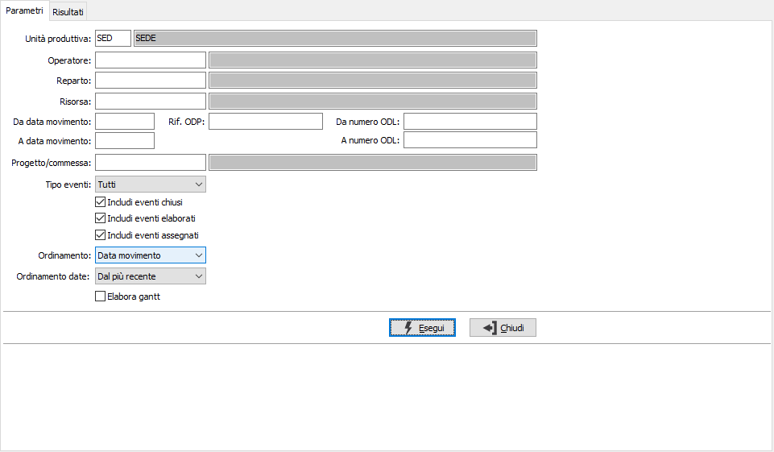
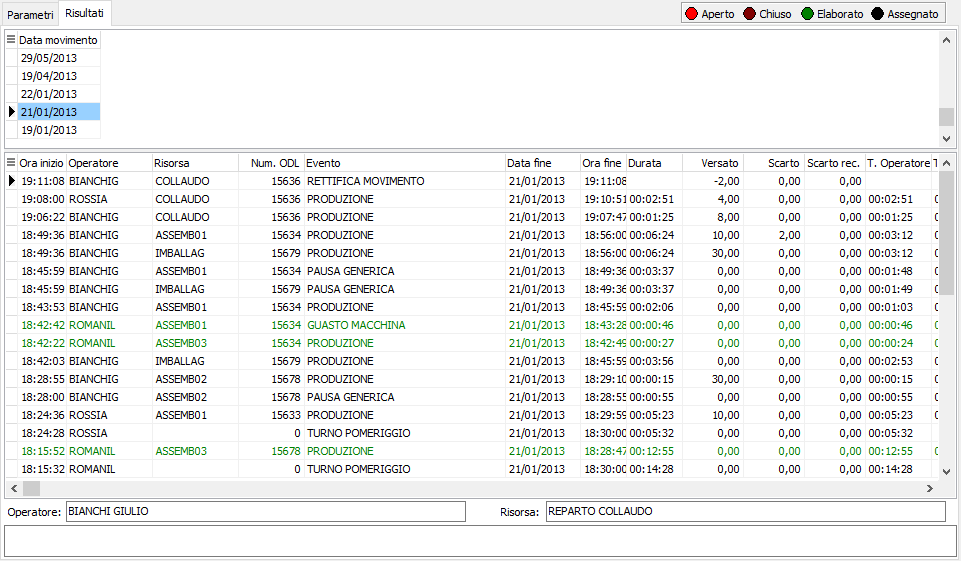
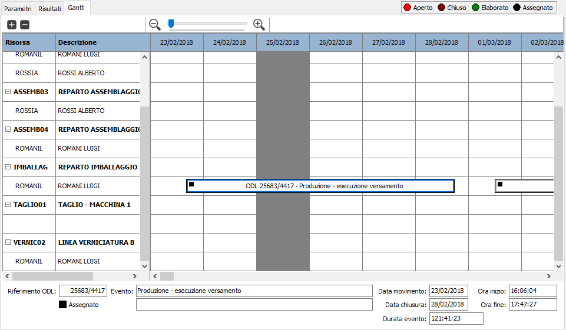

Analisi eventi job
La funzione consente di visualizzare per data, per operatore e per risorsa l’elenco degli eventi registrati attraverso l’applicazione OS1BMJob. E' necessario impostare l'unità produttiva, che se unica e configurata sarà proposta in automatico, è poi possibile specificare operatore, reparto, risorsa (se specificato un reparto sarà possibile specificare risorse di quel solo reparto), un range di date, un singolo riferimento ODP e/o un range di ODL; se attiva la gestione dei progetti sarà possibile indicare anche il singolo progetto; è possibile specificare la tipologia degli eventi da analizzare e sono presenti anche tre caselle per indicare di visualizzare anche gli eventi chiusi, elaborati e assegnati; si può definire il criterio di ordinamento generale e delle date; inoltre è possibile far elaborare un gantt per risorsa/operatore.

Confermando tramite la pressione del bottone Esegui, viene avviata la selezione e richiamata la finestra video Risultati, dove vengono mostrati gli eventi selezionati; la parte superiore cambia a seconda che si sia scelto l'ordinamento per data, per operatore o per risorsa; gli eventi vengono mostrati in colori differenti a seconda dello stato in cui si trovano ed in alto a destra è presente la legenda. Utilizzando i bottoni Anteprima o Stampa presenti nella toolbar è possibile effettuare la stampa dei dati elaborati.

Se è stata richiesta l'elaborazione del gantt sarà presente una pagina aggiuntiva con i dati elaborati sotto forma di gantt per risorsa ed operatore.
